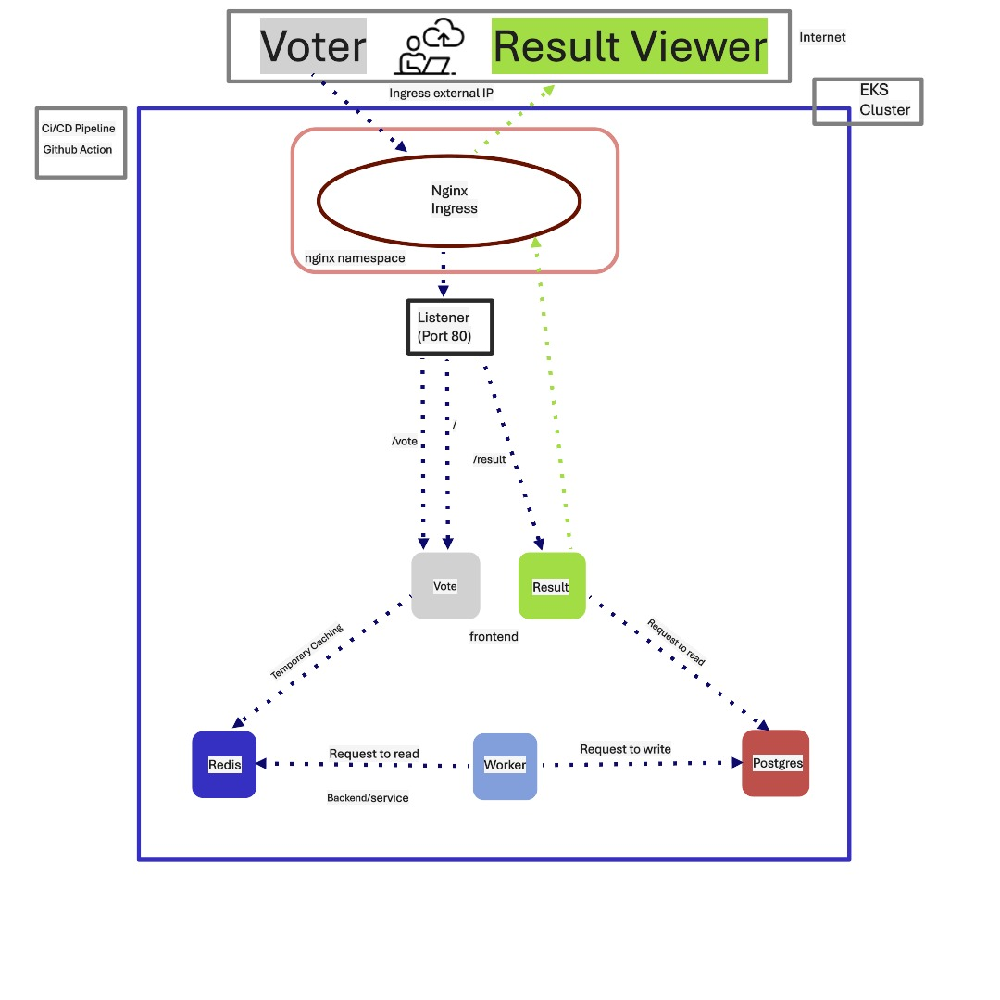

üìö Projects (source codes in GitHub)

Restauranty App End-to-End DevOps Deployment
This project is a full-stack microservices-based web application deployed on Azure Kubernetes Service (AKS) using a GitHub Actions CI/CD pipeline and Terraform infrastructure as code.
Figure 1: Restauranty AppAccess app here Note due to cost reasons the app may not be accessible at the time of use.
 Figure 2: Project Architecture
Figure 2: Project Architecture
The application consists of:
-
Three Node.js backend microservices:
- Auth: User authentication & JWT generation
- Discounts: Campaign and coupon management
- Items: Product catalog and order handling
-
React frontend:
- Acts as a single-page application (SPA) interacting with backend microservices via /api/* routes
-
MongoDB:
- Centralized NoSQL database for all microservices, exposed via port 27017
-
Ingress Controller:
- Routes traffic from a single public IP/domain to appropriate services
- NGINX Ingress on port 80
-
Monitoring & Logging:
- Prometheus + Grafana (monitoring namespace): Metrics scraping and visualization
- ELK Stack (Elasticsearch, Logstash, Kibana) (logging namespace): Centralized log collection and analysis
-
üîê Security:
- Ingress is the only public entrypoint.
- JWT authentication handled by the Auth service; other services validate tokens.
- Environment variables and secrets are stored securely in Kubernetes Secrets or .env (not committed).
- Network Policies restrict communication between pods where needed.
Key Skills: DevOps | Cloud Platforms (AKS) | Iac | CI/CD Automation with GitHub Action | Containerization | Kubernetes | Monitoring & Logging | Terraform | Agile Methodologies (Jira)
GitHub Repository: Here
EKS-based Microservice App-automation
This project is a simplified voting application deployed on Amazon EKS (Elastic Kubernetes Service). It includes a voting interface and result viewer, integrated with a backend Redis/PostgreSQL system. Deployment is fully automated using GitHub Actions CI/CD.
 Figure 3: Vote App
Figure 3: Vote App
Cast vote here Observe real time result update by adding /result to the elb URL, Note due to cost reasons the app may not be accessible at the time of use.
 Figure 4: Project ArchitectureThe application consists of:
-
Frontend Clients:
- Vote (/vote)
- Result (/result)
-
Backend Services:
- Redis: Acts as a temporary cache to store incoming votes
- PostgreSQL: Stores final vote counts permanently
- Worker: Background service that transfers data from Redis to PostgreSQL
-
Ingress Controller:
- NGINX Ingress exposes a single endpoint with routing to /, /vote and /result
- Ingress Listener on port 80 (two listener rules), two target groups attached two frontend clients at port 80 and 81
-
üîê Security Practices:
- Only Ingress Controller is publicly exposed via EKS Load Balancer
- Communication between services is handled internally within the EKS cluster
- No hardcoded credentials or sensitive data in the codebase
- Secrets are managed via Kubernetes Secrets
Key Skills: DevOps | Cloud Computing | Infrastructure as Code | CI/CD Automation with GitHub Actions | Containerization (Docker) | Kubernetes | AWS | Terraform | Agile Methodologies | AWS Load balancer for Ingress |Redis | Worker | PostgresSQL
GitHub Repository: Here
EC2-based Microservice App-automation
This project is a full-stack microservices-based voting application deployed on AWS infrastructure using Terraform and configuration managed with Ansible. It demonstrates best practices in infrastructure as code (IaC), network security, configuration management, and microservices orchestration using EC2 instances.
Figure 5: Vote App
Cast vote here Observe real time result update by adding /result to the elb URL, Note due to cost reasons the app may not be accessible at the time of use.
 Figure 6: Project Architecture
Figure 6: Project Architecture
-
Frontend:
- Vote App: Casts votes on specific options (accessible at /vote and /)
- Result App: Displays real-time voting results (accessible at /result)
-
Backend Services:
- Redis: Acts as a temporary cache to store incoming votes
- Worker Service: Consumes votes from Redis and writes to Postgres
- PostgreSQL: Stores final vote counts accessible by result
-
VPC with:
- 2 Public Subnets (across 2 AZs for redundancy): ALB (Application Load Balancer) for routing external requests and Bastion Host in one AZ for internal access
- 1 Private Subnet for secure app hosting: Contains 3 EC2 Instances for vote/reult (frontend), redis+worker and Postgres each
- NAT Gateway: Allows private EC2 instances internet access for package installations
- Internet Gateway (IGW): Enables external traffic routing via ALB and Bastion Host
-
üîê Security:
- Security group rules defined for tightly controlled communication for expmple, redis allows connection from vote and worker only, postgress allow connection from result and worker only
- EC2s only allow connection from Bastion host which hosts Ansible and uses ProxyJump for secure SSH access. Automates application installation and configuration across EC2 instances
-
Application Flow:
- User casts a vote via Vote frontend → Redis cache vote → worker read votes from redis and writes to Postgres → result reads results from Postgres
- vote port (80:80), result port (81:80), redis port (6379:6379), worker port(no port exposed and no service created because it gets no connection from anywhere), postgres port(5432:5432)
- Worker: Background service that transfers data from Redis to PostgreSQL
Key Skills: DevOps | Cloud Computing | Infrastructure as Code | Configuration management - Ansible | Containerization | AWS, EC2, VPC, Subnets, Nat, IGW and ALB | Agile Methodologies | microservice architecture | Networking - Load balancer, private/public subnet isolation, Nat configuration.
GitHub Repository: Here